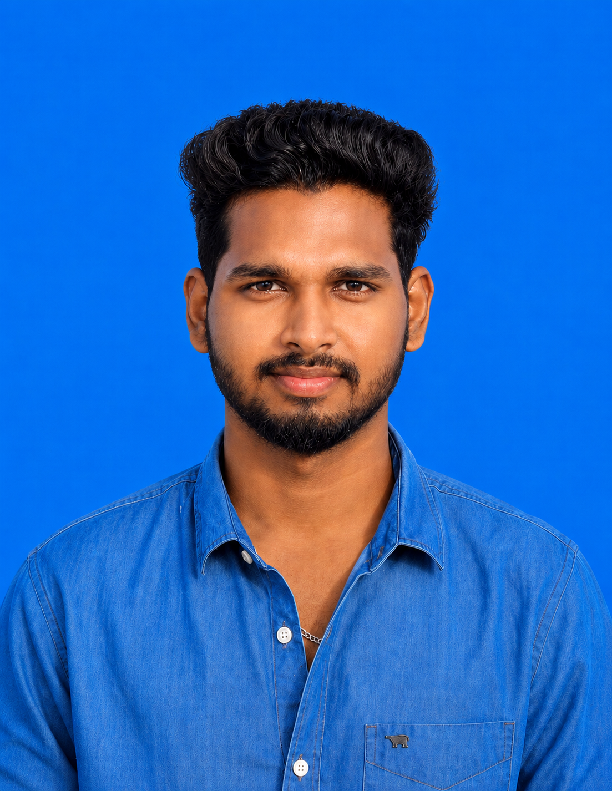

Fisheries Science Graduate | Crustacean Taxonomy | Estuarine Ecology | Biodiversity Research
Research-oriented Fisheries Science graduate with expertise in marine biology, biodiversity assessment, crustacean taxonomy, estuarine ecology, aquaculture and fisheries data analysis.
Download CV
CGPA
Research Papers
Published
Accepted
National Award
New record of the bristly crab from the Vellar Estuary, Tamil Nadu, Southeastern India.
Journal: Oceanological and Hydrobiological Studies
Status: Published (2025)
View PublicationFirst report of a non-native amphipod species from the Vellar Estuary, Southeast Coast of India.
Journal: Çanakkale Onsekiz Mart University Journal of Marine Sciences and Fisheries
Status: Published (2025)
View PublicationComprehensive study on population structure, reproductive biology and growth patterns of the sesarmid crab inhabiting tropical oyster reefs.
Journal: Thalassas: An International Journal of Marine Sciences
Status: Published (2026)
View PublicationIntegrated taxonomic study documenting Athanas polymorphus from the Vellar Estuary, Southeastern India.
Journal: Ege Journal of Fisheries and Aquatic Sciences
Status: Published (2026)
View PublicationDocumentation of parasitic infestation in Alpheus estuariensis from the Vellar Estuary.
Journal: Çanakkale Onsekiz Mart University Journal of Marine Sciences and Fisheries
Status: Accepted (2026)
Seasonal population dynamics and allometric growth analysis from the Vellar Estuary.
Journal: Aquatic Research
Status: Accepted
First Indian record of the sesarmid crab Nanosesarma pontianacense from the Vellar Estuary.
Journal: Journal of the Marine Biological Association of the United Kingdom
Status: Submitted
Seasonal variation in growth patterns and condition factors of Modiolus metcalfi from the Vellar Estuary.
Journal: Journal of Bangladesh Academy of Sciences
Status: Submitted
Investigation of life cycle characteristics and reproductive performance under captive conditions.
Journal: Journal of the Marine Biological Association of the United Kingdom
Status: Submitted
Documentation of oyster bed associated macrofauna of Vellar Estuary.
Research Intern working on biodiversity assessment and coastal ecosystem studies.
Third Prize Winner – Stock Variation of Indian White Shrimp.
Blue Horizon 2025, Kerala Science Congress, MRCVBR 2026.
Interested in research collaboration, biodiversity studies, fisheries science, marine ecology, or academic discussions? Feel free to contact me.